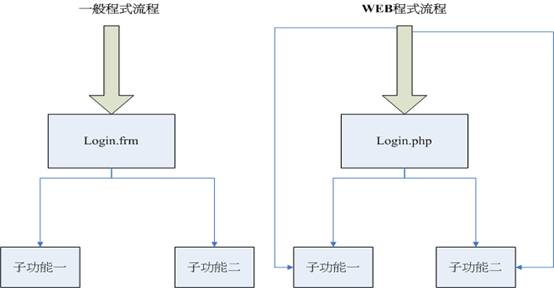

以 Paros 掃描 Web 程式漏洞

前言
隨著電子商務的興起，各式各樣的商務網站 (Web) 如雨後春筍般百花齊放，相關的安全問題也日漸增多。Web 的安全威脅型態與其它安全威脅最大的不同，在於 Web 的安全威脅，通常是因程式設計師的疏失或經驗不足所造成（如 XSS，SQL INJECTION 等漏洞），與一般作業系統只要安裝修正程式（如利用 Microsoft 系統的自動更新）即可修補系統漏洞有很大的差別。以程式設計師的角度，解決程式的漏洞最為有效的方式，是利用檢視程式碼 (Code Review) 會議，重新檢視每一行程式碼，以人工方式找出有問題的程式。但此種方式所花費的人力與物力浩大，有點不切實際，因此通常會使用自動化掃描工具，幫助程式設計師檢查是否有相關漏洞。然而，一套商業化的弱點掃描工具往往所費不貲，也絕非一般中小企業所能負擔的起。在本文中，筆者將介紹一套專門用於掃描 Web 程式漏洞的自動化工具 (Paros)，來幫助讀者掃描網站程式漏洞。
Web 程式基本概念
一說到 Web，我想大部份的讀者腦海裡第一個浮現的念頭一定是 HTML。其實 HTML 語言，最早是被用來統一描述文件的表示方式（利用＜ ＞來描述文字表示方式，如＜b＞＜/b＞即代表以粗體顯示，所以又稱為標籤語言）。在此種應用之下，HTML 就像一般的文字檔，只要您使用瀏覽器來瀏覽 HTML 檔案，即會根據該 HTML 內標籤的意義來顯示文字。此種網頁我們稱之為「靜態網頁」，靜態網頁就像公佈欄一樣，僅可張貼訊息而無法與使用者有任何互動。而至電子商務時代，此種方式已無法符合所需，於是與資訊庫功能結合的「動態網頁」（這也是 Web 安全問題的根源）應運而生。動態網頁運作流程如下圖所示：
▲ 圖1
使用者將「參數」（如上圖中的帳號及密碼）傳遞至網頁伺服器上後，與相對應的網頁程式互動，再由網頁程式根據參數至資料庫擷取相關資訊，動態組成 HTML 內容再回傳至使用者的瀏覽器上。
動態網頁大大地擴展 Web 的應用，使得電子商務變得可行。但也因此衍生出不少安全的漏洞。在說明相關 Web 漏洞前，將說明 Web 的幾個重要觀念如下段。
參數的傳遞
動態網頁需藉由使用者傳遞參數（如登入作業，使用者需傳遞帳號／密碼等資訊來驗證）的內容來執行相關的動作，Web 參數的傳遞定義了下列兩種的傳遞方式。
GET：
此種方式是將參數接在 URL 後，直接傳遞給網頁程式，如下例：
▲ 圖2
POST：
利用 HTML 中的＜FORM＞來將相關的參數傳遞給網頁程式，如下例為傳遞 userid 與 passwd 參數至 index.php
＜form method="POST" action="index.php"＞ #網頁程式位置
＜table border=1＞
＜tr＞
＜td＞帳號:＜/td＞
＜td＞＜input type="text" name="userid”＞＜/td＞
＜/tr＞
＜tr＞
＜td＞密碼:＜/td＞
＜td＞＜input type="text" name="passwd”＞＜/td＞
＜/tr＞
＜tr＞
＜td＞＜/td＞
＜td＞＜input type="submit" value="送出"＞＜/td＞
＜/tr＞
＜/table＞
＜/form＞
Session 與 Cookies
HTTP 是一種無狀態 (stateless) 的連接方式，所謂的無狀態 (stateless) 連接，即表示每次 HTTP 連接都不會記得上一次連接的狀態。那要如何實作一個 Web 應用程式的認證（如會員登入）？有過程式設計經驗的讀者，應該了解在一般的應用程式上，這並不是大問題，因為一般的程式，入口只有一個，在執行時，應用程式一定要先執行登入功能（如下圖中的 Login.frm），通過認證後方可往下執行相關功能。

▲ 圖3
可是很不幸的 Web 程式具有「超連結」的特性。執行 Web 程式時，它未必需要先執行 Login.php 才能去執行其它程式。它可隨意執行網站伺服器上的任意程式（如上圖中的 Web 程式流程 https://＜網站IP＞/子功能一.php），而不一定要先執行 Login.php 登入認證後才可執行其它程式。因此，每支網頁程式中都需使用檢查認證的程式，來驗證使用者是否有登入。但是，問題來了，如前所述，HTTP 是一種無狀態 (stateless) 的連接方式，即使使用者已通過認證，當重新連接新的網頁程式（如子功能一.php），檢查認證的程式該如何來確認使用者已登入了？這也是 cookies 其中一種重要的運用，cookies 是一種由網站伺服器傳遞給使用者的小檔案，當使用者通過認證後可由伺服器丟一個認證 cookies 至使用者的電腦上，而後檢查認證的程式可利用檢查使用者電腦是否存有認證 cookies，來判別使用者是否已登入認證。Session 也是類似的作用，只不過 Session 是儲存在網站伺服器端，而 cookies 則是儲存在使用者的電腦上。
OWASP TOP 10（年度 10 大 Web 安全漏洞）
OWASP 是一個專門研究 Web 軟體安全的社群，他們每年均會提出最有威脅的 Web 安全漏洞來提醒使用者，以下簡單的說明 OWASP 於 2010 年所提出的 Web 安全漏洞。
Injection（注入攻擊）
由於程式設計師出於疏失或經驗不足而未對於使用者輸入的參數值進行檢驗，以致於惡意使用者可利用惡意的輸入值（如惡意 SQL 指令串或惡意的 script 碼），讓系統自動執行惡意的指令而對系統造成危害。此類攻擊以 SQL injection，command injection 為代表，其中以 SQL injection 最具代表也最具危害性。接下來即說明 SQL injection 的攻擊方式，假設有一個驗證是否為會員的登入程式，如下圖示（假設會員表格 (table) 名稱為 account 並以 login 表示帳號參數，passwd 表示密碼參數）：
▲ 圖4
假如程式設計師並未對輸入欄位進行驗證，他的程式碼可能僅是如下的程式碼：
Select * from account where login=’+LOGIN +”’ and passwd=’”+PASSWD+”’”
其中 LOGIN 為使用者所輸入的帳號參數，而 PASSWD 為使用者所輸入的密碼參數。在正常的情況下，當使用者輸入正常的帳號及密碼後，即組成正常的 SQL 查詢字串如下：
Select * FROM account where login=’使用者帳號’ AND passwd=’使用者密碼’
如果有查詢到資訊，即表示為合法使用者（因為該筆記錄在 account 中有存在），否則即不允許登入，但如果有惡意的使用者輸入如上圖的帳號，所組成的 SQL 查詢字串即如下所示：
Select * FROM account where login=’john’ - - passwd=’’
（在 SQL 語法中 - - 表示註解，即後續的指令均不需執行，上述的 SQL 指令即代表只要帳號符合即可通過驗證（即無需輸入密碼即可成功的登入））。上述的例子僅為 SQL Injection 的基本型，其危害程度取決於攻擊者對於 SQL 的了解程度而定。
Cross Site Scripting（XSS，跨網站腳本攻擊）
跨網站腳本攻擊的原因跟 SQL injection 一樣，同樣是因為程式沒有檢驗使用者輸入的參數內容所造成。不過與 SQL injection 最大的不同在於，SQL injection 會對資料庫所在的主機造成重大危害，但 XSS 攻擊主要會造成瀏覽者安全上的危害，往往不會對於主機造成危害，也因此常被管理者所忽略，而使得此種攻擊有越來越普遍的趨勢。XSS 攻擊流程如下:
＜1＞攻擊者將含有 XSS 漏洞的網頁，置於受害的網站伺服器上 。
＜2＞當不知情的使用者瀏覽此網頁時（如瀏覽某則留言），即會啟動 XSS 攻擊碼而將無辜的第三者相關資訊回傳到駭客的電腦上。
Broken Authentication and Session Management（鑑別與連線管理漏洞）
此漏洞是指網站自行開發的身份證驗證與連線 (session) 管理具有安全性的缺失，例如一個網站身份驗證流程如下：
＜1＞當使用者登入成功後，會將一個（含有帳號及密碼甚至權限等相關資訊的 cookies，丟至使用者的電腦端上）。
＜2＞網站再存取該使用者的授權 cookies 來判別使用者的身份。
在上述流程中，如果 cookies 並未加密，惡意的使用者只要取得此 cookies 即可得知其它使用者相關的機密資訊。或者加密的演算法不夠嚴謹，一旦被破解，也會造成使用者的機密資料外流，甚至可冒充其它的使用者（提升權限至管理者）。
Insecure Direct Object References（不安全的物件參考）
如果一個經驗不足的程式設計師，想要實做一支能動態顯示檔案內容的程式，會直覺想到直接把要顯示的檔案當做參數傳進去，如下連結所示：
https://xxx.xxx.xxx.xxx/show.php?file=xxx.txt
而後在接到參數值後，再直接開檔顯示即可。可是如果一個有心人傳進去的參數為：
https://xxx.xxx.xxx.xxx/show.php?file=../../etc/passwd
其中 ".." 為回到上一層，此種參數即可能將系統中的 /etc/ 目錄下的 passwd 檔案顯示出來。
Cross Site Request Forgery（CSRF，跨網站冒名請求）
從某種角度來看，CSRF 可視為廣義的跨網站攻擊 (XSS) ，但 CSRF 通常是在使用者已登入系統服務下發動攻擊。例如：
在討論區中的某段留言塞進一段可直接登出 (logout) 的惡意程式碼，當使用者登入後，在瀏覽相關留言時，只要瀏覽到這段留言，即會觸發該段惡意程式碼，而直接將使用者登出。此即為 CSRF 攻擊。
Security Misconfiguration（不安全的組態設定）
此漏洞較偏向管理面的問題，如未更改預設的帳號及密碼或未定時的更新系統的安全修正程式等等。
Failure to Restrict URL Access（未適當限制的 URL 存取）
一般網站通常會分成前端程式及後端管理程式。基於安全的考量 ，後端管理程式不應該直接被 Internet 上的使用者查詢，而應該限制僅有某些管理者可查詢及存取。如果網站未限制，而使 Internet 上的其它使用者也可正常的查詢，即可能造成潛在的安全漏洞。
Unvalidated Redirects and Forwards（未驗證的網頁重新導向）
有些網站提供網頁重新導向至其它的網站，惡意的攻擊者可利此種特性，將惡意網址插入到重新導向的參數中，讓使用者連接到惡意的網站上。
Insecure Cryptographic Storage（不安全的加密儲存）
網站並未對機密的資料做加密處理或使用不嚴謹的加密演算法，而導致攻擊者在取得相關的機密資料後，可以很輕易的取得相關資訊。
Insufficient Transport Layer Protection（不安全的傳輸防護）
由於 HTTP 連線均是採用明碼的方式連線，攻擊者在任何一個節點均可能利用 Sniffer（竊聽）方式取得來往資料。如果網站採用 HTTP 連線方式，來往的封包均以明碼方式傳輸，攻擊者即可輕易的取得相關機敏資訊。
安裝 Paros
Paros 是一套以 Java 語言開發而成的網站應用程式資訊安全掃瞄工具 (web application security assessment tool)，以 proxy 的形式，介於瀏覽器與待測網站之間，攔截雙方 HTTP 通訊協定，並從中注入相關的測試封包，來完成 Web 的安全檢查。請讀者至 Paros 網站上取得最新版本安裝（在安裝之前要確定您的電腦已安裝 JAVA 的環境）。
此工具有提供相關的介面來操作，使用上僅需下列幾個步驟即可完成。
1.啟動 Paros（讀者可在命令介面上執行 netstat 查看是否有成功啟動，如有 8080 埠（Paros 預設服務的埠）正在運作即表示啟動成功，如下圖示）。
▲圖5 Paros 運行在 8080 埠
2.調整瀏覽器，以 IE8 為例（設定瀏覽器欲使用 proxy，點選【工具】→【網際網路選項】→【連線】→【區域網路設定】如下圖示）。
▲圖6 設定瀏覽器使用 8080 埠的 proxy
3.利用瀏覽器瀏覽欲偵測的網站（此時在 Paros 上的＜site＞區域上即會出現所瀏覽網站的 URL）。
4.利用＜spider＞功能將該網站的所有 URL 資訊捉進來。
▲ 圖7
5.利用 "scan all" 來掃描所有的 URL 網頁，掃描完成後即會產生掃描報表。
6.利用 REPORT 功能查看掃描結果報表（如下圖示）
▲ 圖8
至此，讀者即可參考相關掃描報表來修正 Web 程式的漏洞。